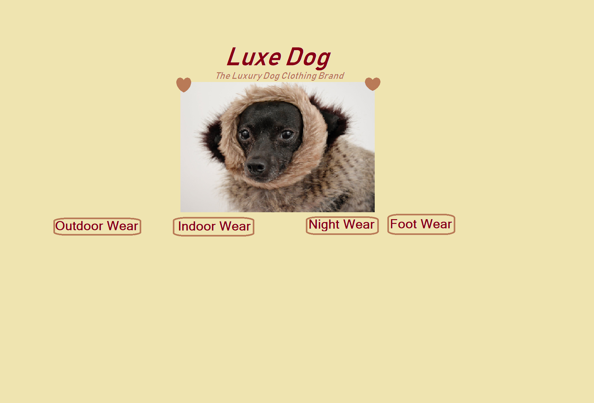

I was approached by a company who were looking to grow their barbershop for hamsters. They are a very niche company, with a very tailored client-base! The website needed to appeal to animal lovers and most notably Hamster lovers. The website needed to include lots of cute pictures of hamsters and their very happy owners, pleased with the service they received! I created the website and ensured that contact details were clearly displayed, prices were included and there was a gallery of all previous haircuts given to people's pets. Here is a link to the Hamster Barbershop website...
I designed a website for a company that produce potraits for people's pets. This is again, a very distinctive business that is marketed towards animal lovers! I had to make sure that the pictures showed happy pets, and happy owners. The website included variations of different potraits for different kinds of pets (dogs, cats, rabbits, horses, chickens, to name a few), including the prices, styles and contact details. Here is the link for Pet Portraits website...
I worked with a luxury dog clothing company named Luxe Dog. They are a well-establised business with a large client base, however they had never had a website before and wanted to reach out to people further afield. This website involved various pages for different dog breeds, shapes, sizes and styles. The website included images and prices of all of their stock. Below is the homepage of the website and you can find the link here....
